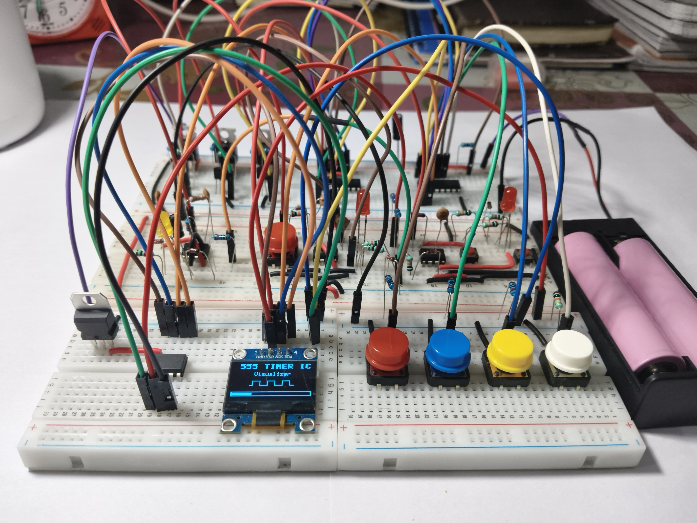
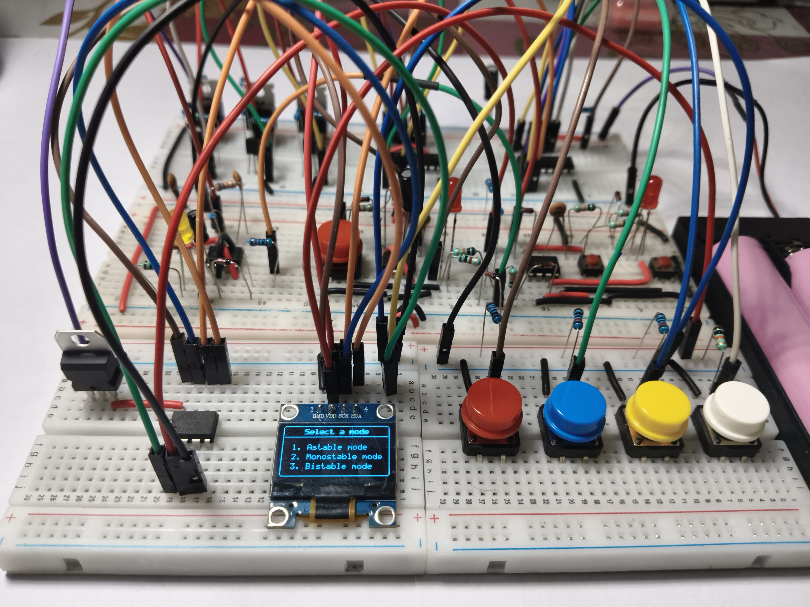
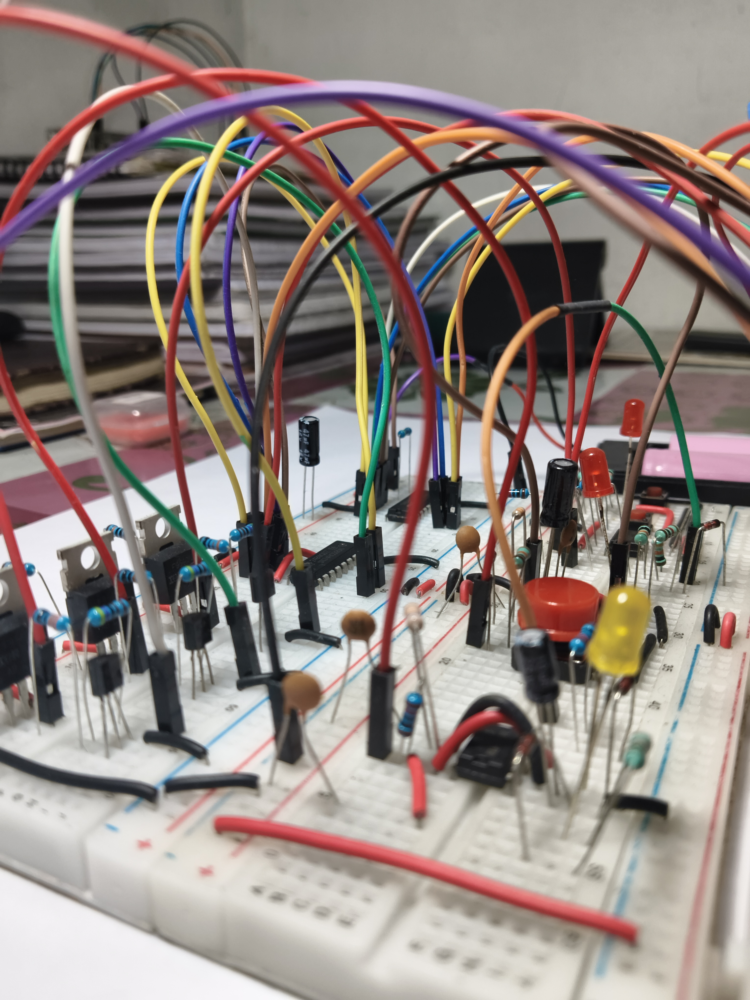
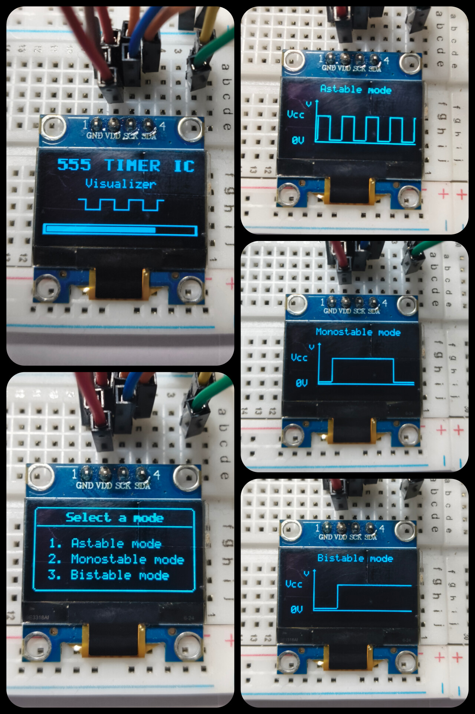
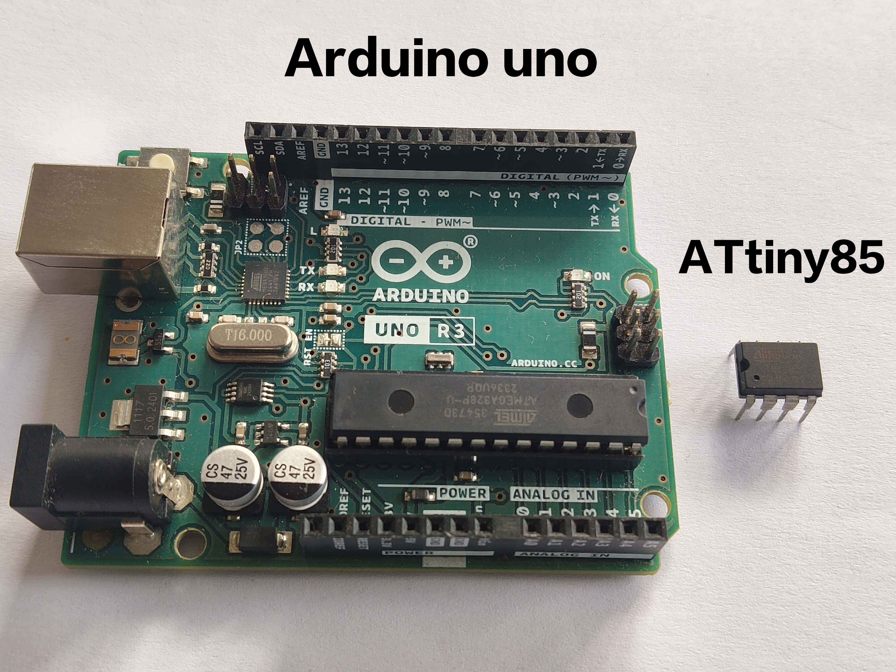

Institution: Government Engineering College, Kozhikode
Batch : S2, ECE 2k25
Date: January 2026
Introduction
The 555 Timer IC is one of the most important ICs in electronics education. It is often the first IC students use to learn timing, triggering, and waveform generation.
However, in most learning setups, the 555 is studied using fixed circuits and LEDs. While these methods show that a circuit works, they do not clearly show how it works. The actual signal behavior remains hidden, making it difficult for beginners to develop an intuitive understanding of the different modes.
This project addresses that limitation by creating a compact hardware learning tool that allows users to switch between astable, monostable, and bistable modes of the 555 timer and directly observe their real-time waveforms on an OLED display.
The system is controlled by an ATtiny85 microcontroller and is designed to operate under strict memory and hardware constraints, resulting in a small, standalone, and interactive platform that makes learning the 555 timer more visual, practical, and intuitive.

555 Timer IC Visualizer
Objectives
The main objectives of this project are:
To design a compact hardware learning tool based on the 555 timer IC
To integrate astable, monostable, and bistable configurations into one system
To visualize real-time output waveforms on an OLED display
To implement menu-based mode selection using physical buttons
To develop the complete system on a highly resource-limited microcontroller (ATtiny85)
To build a standalone device without dependence on external measurement equipment
System Overview
Main Functional Blocks
1. Power System
Battery / external supply input
7805 voltage regulator for stable 5 Voltage
External supply for 555 circuits and stable 5V for other ICs
2. Control Unit
ATtiny85 microcontroller
Core controller of the entire system
Reads buttons
Controls which 555 circuit is powered
Samples 555 output
Draws waveforms and UI on OLED
3. 555 Mode Circuits
Separate hardware circuis for :
Astable mode
Monostable mode
Bistable mode
Only one circuit is powered at a time
4. Power Switching Network
P-channel MOSFETs & NPN drivers
MCU selects which 555 block receives VCC
5. Input Interface
4 push buttons for system control
Connected through 74HC165 shift register
Extended input pins for ATtiny85
6. Output Interface
OLED (I²C) for UI and waveform display
Extended output pins through 74HC595 shift register
Hardware Design
Schematics and Pin Mapping
Figure 4.1 – Schematic of 555 Timer IC Visualizer
Components Required
Classification
Component ID
Component Name / Value
Quantity
Description
Integrated Circuits (ICs)
U1, U2, U3
NE555D
3
Precision Timer IC (likely SOIC-8 or DIP-8 package)
U4
74HC595
1
8-bit Shift Register (Serial-in, Parallel-out)
U5
74HC165
1
8-bit Shift Register (Parallel-in, Serial-out)
U6
LM7805
1
5V Voltage Regulator
U7
ATtiny85
1
8-bit AVR Microcontroller
Transistors & MOSFETs
Q1, Q3, Q6
IRF9540N
3
P-Channel Power MOSFET
Q2, Q4, Q7
BC547
3
NPN General Purpose Transistor
Diodes & LEDs
D1, D3, D5
LED
3
Generic Light Emitting Diode (Color of choice)
D2, D4, D6
1N4148
3
Small Signal Fast Switching Diode
Resistors
R10, R11, R25
330 Ω
3
Standard 1/4W Resistor
R3, R6, R9
1 kΩ
3
R15, R17, R26, R27
4.7 kΩ
4
R1, R5, R7, R8, R14, R18, R19, R20, R21, R22, R23
10 kΩ
11
R13
22 kΩ
1
R4
33 kΩ
1
R2
68 kΩ
1
R12, R16, R24
100 kΩ
3
Capacitors
C1
10 µF
1
Electrolytic (Polarized)
C3
100 µF
1
C2, C4, C5
0.1 µF (100nF)
3
Ceramic / Film (Non-polarized)
Electromechanical & Modules
SW1 - SW7
Push Buttons
7
Momentary tactile switches (normally open)
J1
OLED Display
1
I2C OLED Module (likely SSD1306, 4-pin)
Power Supply
Terminal Block/Header
1
Connector for VCC/GND input
5. Software Design
The firmware for the 555 Timer IC Visualizer is written in embedded C using the Arduino framework,
targeted specifically for the ATtiny85 microcontroller.
The software is designed to operate under strict limitations of program memory, SRAM, and I/O pins,
while still providing a responsive user interface and real-time waveform visualization.
5.1 Software Architecture
The program follows a state-based architecture. The entire system operates in one of three well-defined states:
BOOT: Displays the startup animation and progress bar
MENU: Allows the user to select the 555 timer mode
MODE: Actively samples and visualizes the selected 555 configuration
This approach ensures predictable execution, simplifies debugging, and prevents unnecessary background tasks
from consuming memory or processing time.
5.2 Program Flow
After power-up, the system initializes the OLED display, shift registers, and internal variables.
The boot screen is displayed for a fixed duration, after which the system transitions to the menu state.
User input is continuously monitored, and valid button presses trigger state transitions or mode changes.
5.3 Input Handling
All user inputs are read through a 74HC165 shift register to minimize pin usage.
Button states are debounced in software and decoded using bit masking.
A centralized button handler ensures consistent behavior across all system states.
5.4 Display and User Interface
The OLED display is controlled using the I²C protocol.
Due to limited SRAM, the display is updated page-by-page using a 128-byte buffer,
instead of storing a full frame buffer in memory.
Custom font rendering and lightweight drawing routines are implemented to support
text, menus, animations, and waveform plotting without external graphics libraries.
5.5 Waveform Sampling and Visualization
The output of the active 555 timer circuit is sampled using the ATtiny85 analog input.
Threshold-based logic converts the analog signal into a digital level.
A rolling history buffer stores recent samples and is used to render a scrolling waveform
on the display in real time.
5.6 Power and Mode Control
Only one 555 timer configuration is powered at a time.
The microcontroller controls this using shift-register-driven outputs and MOSFET switching,
ensuring electrical isolation between modes and preventing back-powering issues.
5.7 Memory and Performance Optimization
The final firmware occupies approximately 61% of program memory and
86% of available SRAM.
Careful use of global variables, fixed-size buffers, and program-memory storage (PROGMEM)
was necessary to maintain system stability within the ATtiny85’s 512-byte SRAM limit.
No dynamic memory allocation is used. All timing, sampling, and animation logic is implemented
using non-blocking techniques to maintain responsiveness.
Inactive 555 circuits were getting partially powered (back-powering)
Used MOSFET-based power switching so only one 555 circuit is powered at a time
Signal Sharing
OLED, buttons, and control logic shared clock/data lines causing conflicts
Carefully sequenced shift-register access and restored I²C state after reads
Display Reliability
OLED failed to initialize or froze randomly
Enforced strict OLED initialization and avoided uncontrolled I²C access
Memory Limits
Only 512 bytes of SRAM available
Used page-based rendering, fixed-size buffers, and PROGMEM for fonts
Astable Mode Graph
Astable output switched too fast to draw a correct waveform from samples
Displayed a fixed reference square wave instead of sampled data
Timing & Responsiveness
Delays affected UI responsiveness and waveform animation
Used non-blocking logic for sampling, animation, and button handling
Input Stability
Noise caused false button triggers
Implemented software debouncing and stabilized input reads
Results
The system enables beginners to actively explore the internal behavior of the 555 timer by manually controlling each operating mode and directly observing how user-driven inputs translate into real-time waveform changes, fostering deeper conceptual understanding through hands-on experimentation.

Figure 4.2 – Menu screen

Figure 4.3 – Breadboard circuit

Figure 4.4 – OLED Interface and waveforms

Figure 4.5 - Arduino Uno and ATtiny85
Conclusion
This project demonstrates how a simple learning concept can be transformed into a deeper, more intuitive experience through thoughtful hardware and software design. By combining the 555 Timer IC with a compact microcontroller-based visualization system, abstract timing behavior becomes directly observable and easier to understand.
The final system not only meets its educational goals but also highlights the value of learning through experimentation, constraints, and hands-on problem solving.
Future Improvements
Although the current system meets its intended educational goals, several enhancements can further improve functionality, usability, and learning depth:
PCB Implementation:
Transitioning from a breadboard-based prototype to a dedicated PCB will improve reliability, reduce noise, and make the system more compact and robust for long-term use
User-Adjustable Parameters:
Adding potentiometers or digital controls would allow users to vary timing components (resistance and capacitance) in real time, enabling deeper experimentation with frequency, pulse width, and trigger behavior.
Logic State Display:
Integrating a 7-segment display to indicate the logic state (HIGH/LOW) of the active 555 output would provide an immediate visual reference alongside the waveform display, improving conceptual clarity for beginners.
References
Datasheets
The following component datasheets are provided for reference.
V P Adhil Krishnan
Undergraduate Student, Electronics and Communication Engineering
Government Engineering College, Kozhikode
This document is part of a self-initiated hardware learning project developed
for educational and exploratory purposes.
All designs, schematics, and firmware were independently developed and tested
by the author.